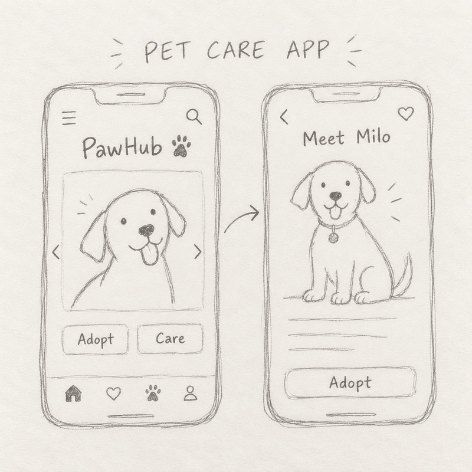

About me
I’m Rayan Yedes. My work brings together visual design, illustration, and user experience.

How I approach a project
I start with what the viewer needs to do. In the Pet Care App, that means finding an adoption action on a small screen. In the chest press poster, it means seeing the movement at a glance.
From sketch to layout
I explore the idea in thumbnails, then work on typography, spacing, and how the elements read together. The four Week 5 portfolio images are AI-generated pencil-style concept studies.
View résumé